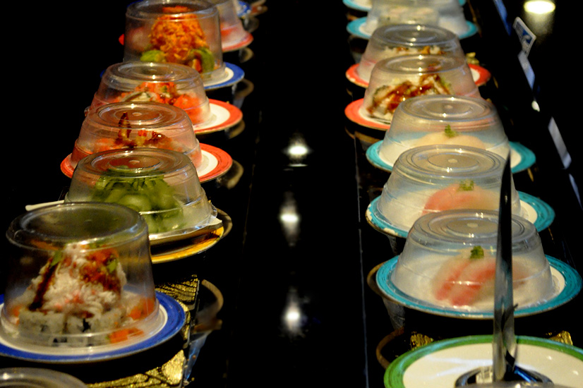

HOME

MENU

ABOUT

The origin of sushi is not Japan. It is said that sushi was introduced into Japan in the 77th century from China. People began making sushi to preserve fish by fermentation when there were no refrigerators. Since salt and rice were needed in order to ferment fish, sushi became to be closely related to rice in Japan. Then, it developed into current sushi which combines fish and rices.
Sushi is low in fat and is a very nutritious food. A typical setting of 7-9 pieces contains about 300-450 calories. The fish in sushi provides protein and can be a good source of omega-3 fatty acids. Omega-3 fatty acids are not only a nutritional requirement of humans but also a fatty acid that shows promise in remediation of many ailments from which we suffer for lack of this essential fatty acid in our modern diet, including cardiovascular disease.
| Day of the Week | Hours |
|---|---|
| Monday | 11:00 a.m. - 9:30 p.m. |
| Tuesday | 11:00 a.m. - 9:30 p.m. |
| Wednesday | 11:00 a.m. - 9:30 p.m. |
| Thursday | 11:00 a.m. - 9:30 p.m. |
| Friday | 11:00 a.m. - 10:00 p.m. |
| Saturday | 11:00 a.m. - 10:00 p.m. |
| Sunday | 12:00 p.m. - 9:00 p.m. |